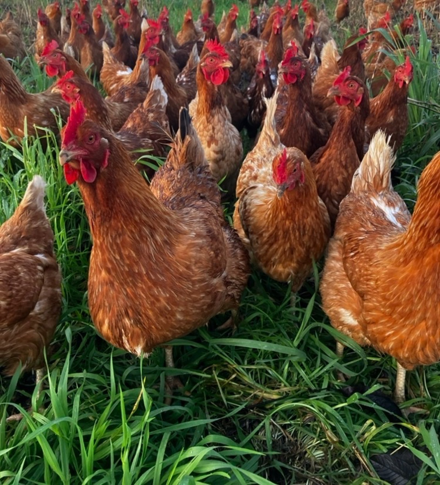

Four generations, same ground
Beauchamp Bend is named after my great-grandfather and the bend in the road the farm sits on. My family has worked this ground for four generations. We've only farmed it this way for part of that, but it's the part that made the food good again.

Where the road bends
The Beauchamp name comes from my great-grandfather. The bend is literal. The road curves around the edge of the property and the walnuts sit inside the curve.
For most of those years we farmed it like everyone else around here. Disc it, fertilize it, spray it. It grew walnuts. It also lost topsoil, held less water each year, and took more inputs to get the same crop.
So we stopped. Not because it was trendy. Because we were wearing the dirt out and it was going to cost us.
What regenerative means here
Regenerative gets used loosely. These are the specific things we do, and why.
No-till walnuts
We stopped turning the soil. Each pass of a plow burns organic matter and breaks up the structure that carries water to a walnut's roots. Leaving it alone is what holds water through a dry summer.
Goats instead of mowers
The goats rotate through the orchard and eat down the ground cover. We move them when the grass tells us to, not on a calendar. They leave manure behind and we don't burn diesel mowing between rows.
Hens on fresh ground daily
The laying flock moves to new pasture every day. They eat grass and insects instead of just feed, which cuts what we buy and makes a better egg. It also spreads their manure out instead of piling it in one spot.

“We're not trying to get bigger. We're trying to leave the place better than we found it.”
Joe Dillard
Who you're buying from
This is a family operation, not a brand with a warehouse behind it. When you order, you're dealing with us directly.
We're in Williams, California, on the west side of the Sacramento Valley. Chandler walnuts, a laying flock, goats, and broilers in season.
- Location Williams, California
- Walnuts Chandler English, no-till
- Livestock Laying hens, broilers, goats
Come see the place
Pickup happens at the farm. If you're local and curious, get in touch and we'll sort out a time.